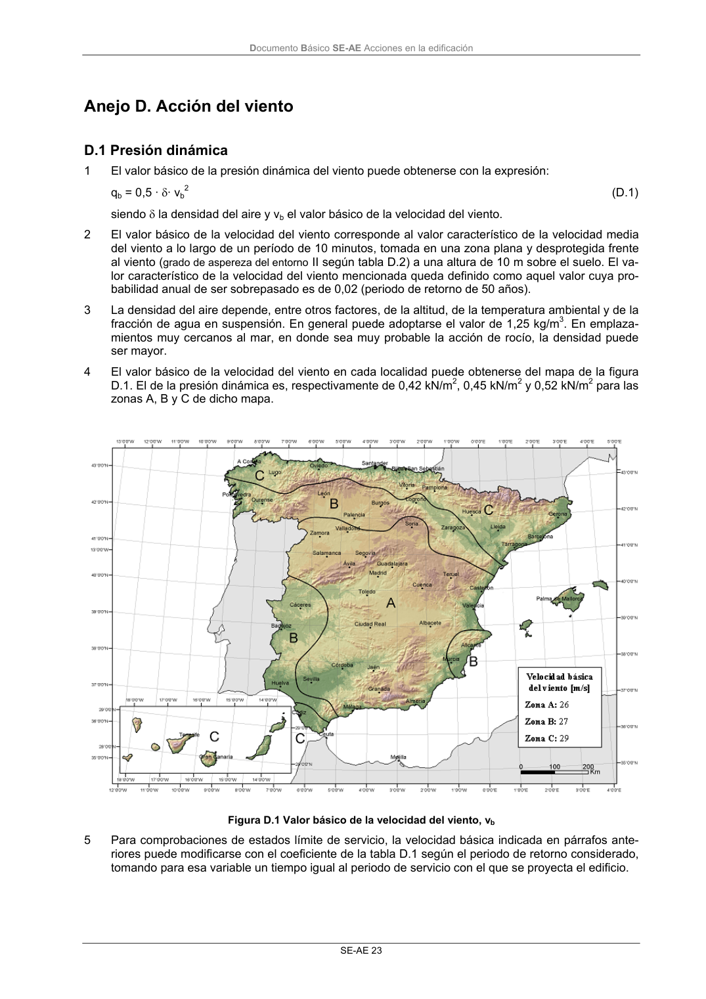

DB-SE-AE · Anejo D. Acción del viento · versión 2009-04
SHA256: 26116e5088955f0c6963a6187270cad282e1e7bf5a53a90f695c8fa50b4e4487 · página física 27 de 46 · métodos de encabezado
solo si están cotejados.
Formatos: Markdown · JSON de bloques · PDF p. 27 · imagen PNG
Documento Básico SE-AE Acciones en la edificación SE-AE 23 Anejo D. Acción del viento D.1 Presión dinámica 1 El valor básico de la presión dinámica del viento puede obtenerse con la expresión: qb = 0,5 · δ· vb 2 (D.1) siendo δ la densidad del aire y vb el valor básico de la velocidad del viento. 2 El valor básico de la velocidad del viento corresponde al valor característico de la velocidad media del viento a lo largo de un período de 10 minutos, tomada en una zona plana y desprotegida frente al viento (grado de aspereza del entorno II según tabla D.2) a una altura de 10 m sobre el suelo. El va- lor característico de la velocidad del viento mencionada queda definido como aquel valor cuya pro- babilidad anual de ser sobrepasado es de 0,02 (periodo de retorno de 50 años). 3 La densidad del aire depende, entre otros factores, de la altitud, de la temperatura ambiental y de la fracción de agua en suspensión. En general puede adoptarse el valor de 1,25 kg/m3. En emplaza- mientos muy cercanos al mar, en donde sea muy probable la acción de rocío, la densidad puede ser mayor. 4 El valor básico de la velocidad del viento en cada localidad puede obtenerse del mapa de la figura D.1. El de la presión dinámica es, respectivamente de 0,42 kN/m2, 0,45 kN/m2 y 0,52 kN/m2 para las zonas A, B y C de dicho mapa. Figura D.1 Valor básico de la velocidad del viento, vb 5 Para comprobaciones de estados límite de servicio, la velocidad básica indicada en párrafos ante- riores puede modificarse con el coeficiente de la tabla D.1 según el periodo de retorno considerado, tomando para esa variable un tiempo igual al periodo de servicio con el que se proyecta el edificio.
